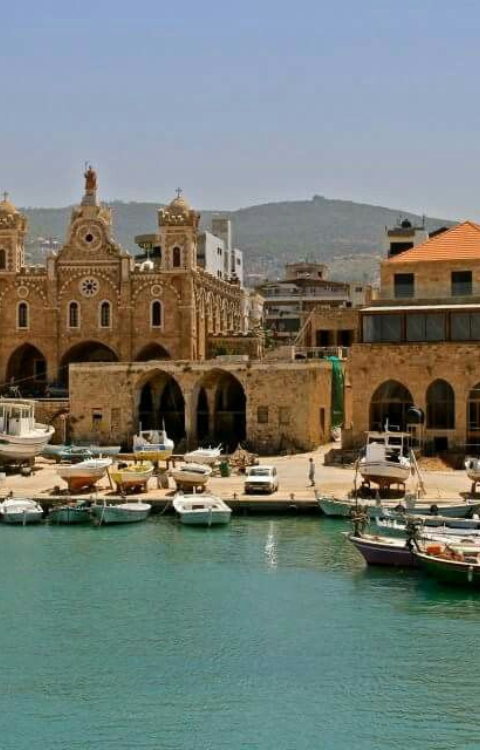
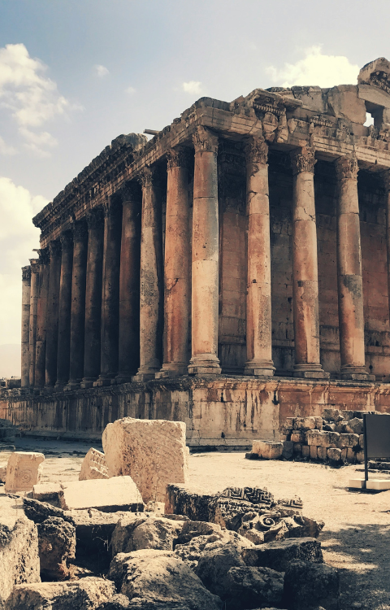
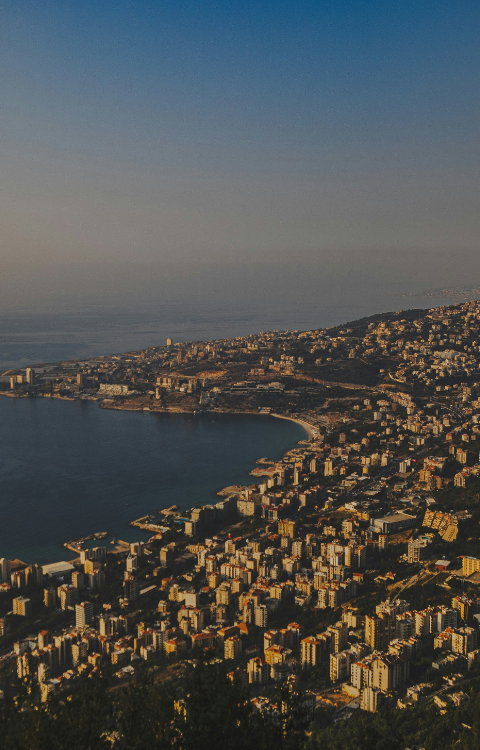
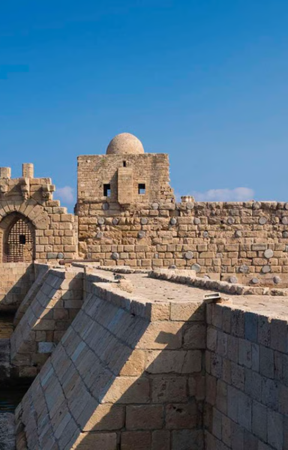
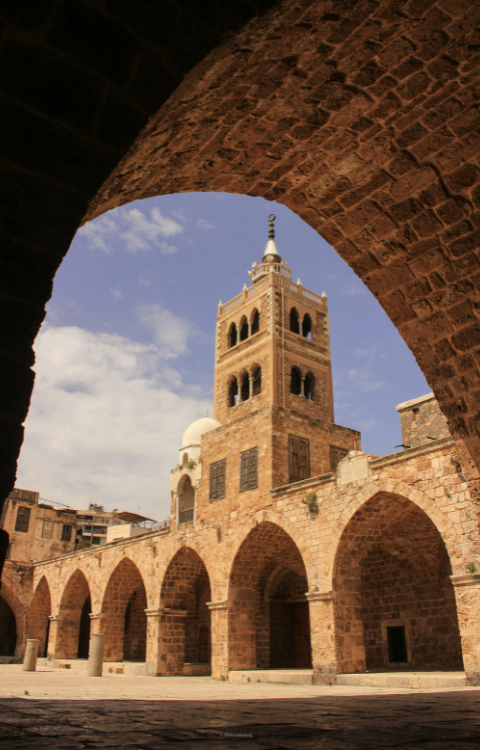

Beirut

Beirut
The vibrant capital, Beirut, has been inhabited for over 5,000 years. Known as the "Paris of the Middle East," it`s a center of culture, art, and trade since the Phoenician Era.
Byblos

Byblos
One of the oldest continuously inhabited cities in the world, Byblos is where the Phoenician alphabet was born. Inhabited since 5000 BC, it`s a testament to ancient civilisation.
Batroun

Batroun
This coastal city, with its history dating back to the Phoenicians, was a crucial stop along the maritime trade routes, strategically located along the rocky coast.
Baalbek

Baalbek
Known as Heliopolis during the Roman era, Baalbek`s history streches back to the 3rd millenium BC. Its monumental ruins reflect its status as a center of worship and pilgrimage.
Tyre

Tyre
The city that created Tyrian purple.
Founded around 2750 BC, Tyre was a powerful Phoenician city-state, famed for its production of purple dye and maritime strength. It is still a symbol of Southern resilience.
Jounieh

Jounieh
A cherished port since antiquity, Jounieh`s history is intertwined with the Phoenicians, who established it as a key maritime hub.
Saida(Sidon)

Saida(Sidon)
One of the most important Phoenician cities, Sidon has been continuously inhabited since the 4th millenium BC, known for its skilled craftsmen.
Tripoli

Tripoli
Dating back to the 14th century BC, Tripoli has long been a hub for commerce and education, with roots deeply entrenched in Phoenician civilisation.